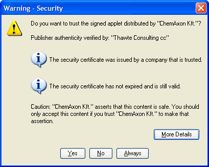

|
|
Security |
Security includes the following topics:
Java applications and applets deployed using Java Web Start and Java Plug-in are by default run in a secure sandbox that defines the set of permissions that code in an untrusted app is granted.
The standard java policy files can be used to enhance the permissions granted to untrusted apps. In addition to $JRE_HOME/lib/security/java.policy and $USER_HOME/.java.policy (used by all java programs), applications and applets loaded by Java Web Start and Java Plug-in load two additional policy files, whose location can be configured by the deployment configuration properties: deployment.user.security.policy and deployment.system.security.policy.
The default sandbox, combined with the permissions granted by these policy files, if they exist, determine the permissions granted to untrusted code.
One other policy file, whose location is determined by the deployment configuration property deployment.security.trusted.policy, can be used to restrict the permissions granted to trusted code. With this property unset (default), trusted code will be granted the AllPermission permission. With this property set, trusted code will be granted only the permissions granted to untrusted code, plus any other permissions granted by the policy file pointed to by this property.
The deployment configuration also has several properties that determine how and if code can be trusted. Normally, any signed JAR file in Java Plug-in, and any set of signed JAR files in Java Web Start that are listed in a jnlp file requesting the AllPermission permission, will be granted trust by the user after the certificate chains have been verified and shown to the user in a security dialog.
The deployment configuration property deployment.user.security.trusted.certs points to a certificate store that contains the certificates already accepted by the user.
The deployment configuration property deployment.system.security.trusted.certs can be configured to point to a certificate store of certificates pre-accepted by the system administrator.
If a JAR file (in Java Plug-in) or set of JAR files in a jnlp file requesting the AllPermission permission (in Java Web Start) is signed by a certificate that is in one of these stores, it will be trusted.
The deployment configuration property deployment.security.askgrantdialog.show can control if the user is permitted to grant trust to new code signed with new certificates, and the deployment configuration property deployment.security.askgrantdialog.notinca can further be used to control if the user is permitted to grant trust to code signed by certificates whose root certificate is not in one of the Root Certificate Authority certificate stores (see below).
If the above two properties allow it, and the code is signed with certificate chains that can be properly validated, the user will then be shown a security dialog asking him/her to grant trust to the code.

The deployment configuration property deployment.security.notinca.warning can be used to customize the information shown in the security dialog. If this is set to true (default), then the security dialog for a self-signed certificate will look as follows:

If deployment.security.notinca.warning is set to false, the dialog will look like this:

The deployment configuration property deployment.security.expired.warning can also be used to customize the information shown in the security dialog. If this is set to true (default), then the security dialog for an expired certificate will look as follows:

If deployment.security.expired.warning is set to false, the dialog will look like this:

The user can answer "Yes", "No", or "Always".
If the user answers "No", if the certificate is invalid, or if the user cannot be shown the dialog, either because deployment.security.askgrantdialog.show or deployment.security.askgrantdialog.notinca is false, then in Java Web Start the application will not be run, and in Java Plug-in the JAR will be run with sandbox permissions.
If the user answers "Always", the certificate will be stored in the certificate store pointed to by the deployment.user.security.trusted.certs property.
The Root Certificate Authority certificate stores mentioned above are the union of the certificate stores in the files pointed to by the properties: deployment.user.security.cacerts and deployment.system.security.cacerts. By default deployment.system.security.cacerts points to the cacerts file in the jre/lib/security directory. deployment.user.security.cacerts points to a file that contains any additional cacerts imported into it using the Certificates dialog in the Security tab of the Java Control Panel.
One final setting can be used to customize the user experience in Java Web Start. By default the sandbox does not include the AWTPermission showWindowWithoutWarningBanner. Without this permission, all top-level windows will contain the awt banner "Java Application Window" or "Java Applet Window". The deployment configuration property deployment.security.sandbox.awtwarningwindow can be used to add this permission to untrusted code.